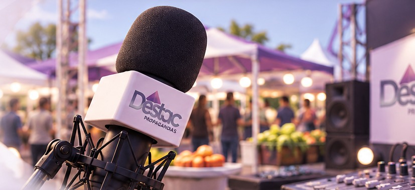
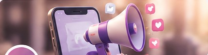

📍 Cascavel, PR
Feira do Produtor Rural
Um projeto de comunicação que valoriza o comércio local e conecta anunciantes às pessoas que frequentam a feira em Cascavel.
Quero divulgar na feira →Da feira à estrada, dos eventos à comunidade. A DESTAC cria conexões entre empresas e públicos por meio de projetos de comunicação que fazem parte da vida real.

Cada projeto tem um público, uma história e uma oportunidade de comunicação. Conheça nossos principais canais e iniciativas.
Um projeto de comunicação que valoriza o comércio local e conecta anunciantes às pessoas que frequentam a feira em Cascavel.
Quero divulgar na feira →
📅 Eventos e divulgaçãoDivulgação e visibilidade para programações, encontros, campanhas e acontecimentos que movimentam a região.
Divulgar meu evento →Um projeto de comunicação dedicado ao universo dos caminhoneiros e às empresas que desejam conversar com esse público.
Anunciar neste projeto →Outras ações, campanhas e projetos especiais também fazem parte da DESTAC.
A DESTAC reúne diferentes projetos sob uma mesma visão: dar visibilidade a negócios e iniciativas por meio de canais de comunicação próximos de seus públicos.
Uma conversa simples para entender seu negócio e identificar o projeto mais adequado para sua comunicação.
Apresente sua empresa, produto, serviço ou evento e o público que deseja alcançar.
Conheça os projetos disponíveis e as possibilidades de divulgação em cada um deles.
Entre em contato para conhecer formatos e condições comerciais de publicidade.
Quer anunciar na Feira do Produtor Rural, no Informativo de Eventos ou na Rádio do Caminhoneiro? Envie sua mensagem e diga em qual projeto tem interesse.
O botão abre seu aplicativo de e-mail. O endereço comercial oficial poderá ser configurado na integração com o site existente.